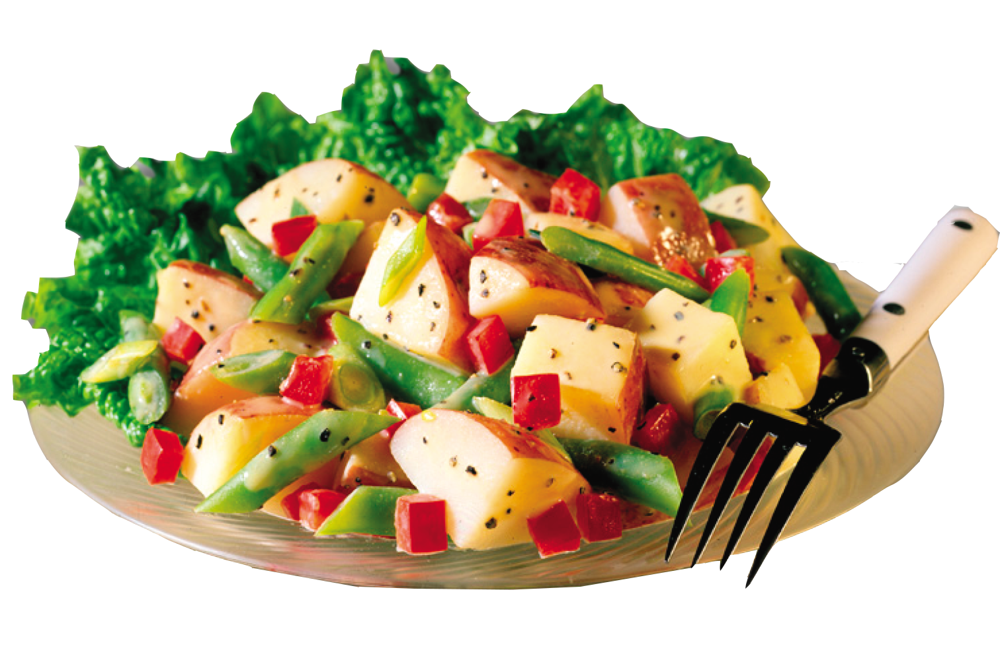

විටමින් A සහ කැරොටින් වර්ග
- ජලයේ දියවි විනාශ නොවේ.මද උණුසුම් තත්ත්වයකදී ස්ථාවර වුවද ආලෝකය හමුවේ විනාශයට පත්වේ.
විටමින් E
- තෙම්පරාදු කිරිම / තෙල් දැමීමේ දි සෙමෙන් විනාශ වි යයි.ආලෝකයට සංවේදිය.ගැඹුරු තෙලේ බැඳිම සහ අධිශිත කිරිමෙන් විටමින් E නැති වි යා හැකිය.
ඛනිජ ලවණ
- ජල ද්රාව්ය ඛනිජ ලවණ ආහාර පිසිමේදි එහි වු ජලයේ දිය වි ඉවත් විය හැකිය.
- මුහුදු මාළු අධිශිත කිරිමෙන් එහි වු අයඩින් විනාශ වි යා හැකිය.මීට අමතරව ආහාර පිසිමේදි ආහාර උණුසුම් ව තිබිය දීම අයඩින් මිශ්ර ලුණු එක් කිරිමෙන් අයඩීන් ක්ෂය වි යයි. අයඩින් මිශ්ර ලුණු භාජනය ලිප ලඟ හෝ ගෑස් උදුණක් ලඟ තැබිමෙන්ද එහි ඇති අයඩින් ඉවත් වී යා හැකිය. අයඩින් මිශ්ර ලුණු අදුරු පැහැති බඳුනක බහා රත් නොවන ආකාරයට හා හිරු එළියට කෙලින්ම නිරාවරණය නොවන සේ තබන්න.මේ අනුව ඉපැරණි ලුණු පොල්කට්ට අයඩින් මිශ්ර ලුණු දමා නුසුදුසු බව පැහැදිළි වේ. 
දෙමාපියන්ට සටහනක්
ඔබ අධික රුධිර පීඩනයෙන් පෙළෙන්නේ නම් ලුණු වැඩිපුර එක් කර සැකසු ආහාර (උදා :- චීස් ,බටර්,සෝයා සෝස් ,ටින් මාළු ,අච්චාරු ,බයිට් මික්ස්චර් ආදිය ) ගැනිම අඩු කරන්න.